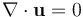
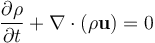

Fluid Simulation and Melting
Ty Trusty
Project Description
For my final project my goal was to explore fluid simulation and learn how a melting effect could be achieved. After some research, I came across the paper Melting and Flowing [Carlson et al. 2002] describing how you can view solids as highly viscous liquids and vary the viscosity to simulate melting.
Source Code
melting.tar.gzBackground
-
Navier-Stokes
The Navier-Stokes equations are used to describe the motion of fluids. They serve as a direct application of Newton's Second Law to fluids. The two components of Navier-Strokes are the following:
First Equation:

Second Equation:
The second equation describes the incompressibility condition of the fluid. Examining the equation, it simply states that the divergence of the velocity vector is zero. In other words, the density of the fluid is constant. The purpose of this equation is to ensure that our fluid abides by conservation of mass. Also, the reason we state that the fluid is incompressible is because it provides a good enough approximation of fluids and simplifies the continuity equation. In reality, all fluids are compressible, but they're typically only compressed under extreme conditions (e.g. sonic booms).
-
Signed Distance
-
Implicit Surface
Marching Cubes is an algorithm
-
Marching Cubes
Marching Cubes is an algorithm to extract a mesh from a scalar field. For the purposes of my fluid simulation, the algorithm is used to create the solid's surface from the signed distance field.
 simplifies to by assuming that density is constant
Results
Part 1: Basic Fluid Simulation
As mentioned in the description, you can model a solid melting by representing it as a highly viscous solid.
When creating a fluid simulator, a big decision is whether to model motion with a Langrangian or Eulerian approach. In a Langrangian simulation, fluid is modeled through particles where the path of each particle must be computed individually. For my purposes I chose an Eulerian approach due to ease of implementation. For particles, you have to manage collisions which was a challenge I didn't want to tackle. Furthermore, Eulerian is easier in that the flow field can be represented by a simple 2D array.
Part 2: Making Smoke
Creating smoke wasn't necessarily required to reach my goals, but I considered a good milestone. By simulating smoke, I received assurance that my fluid sim was mostly correct. To create smoke, all I had to do was create some density field and advect the densities along the velocity field. Then to render the smoke, I use the appropriate density value as the alpha term in fragment shader.Part 3: Creating a Surface
After implementing smoke, I attempted to achieve a melting effect with just the density field. However, after many trials I couldn't get a good outcome and it
Part 4: "Melting"
To simulate heat, I created a simple heat boundary that expands in a uniform radius over time.
Challenges
Besides the ordinary physics and OpenGL errors, I had some other issues that I consider noteworthy
The main issue that remains unsolved is volume loss. I initially believed this to a result of incorrect boundary conditions, so I spent a large amount of time tinkering with different conditions. My first attempt was based off of an intuitive understanding of liquids at a box. When a liquid moves horizontally towards a wall, the horizontal velocity is reversed (from hitting the wall) and the vertical velocity remains unchanged (so that it can move up the wall). This had very noticeable volume loss. My next attempt involved always reversing velocities, but this didn't resolve the issue. And then the result that appeared most correct was setting 0 velocity at the boundaries, but volume loss continued to be extreme.
The videos below show 3 different attempts at fixing boundary conditions.
| Sometimes Reverse Velocities | Always Reverse Velocities | Zero-Velocity Boundaries |
As you can see, different boundary conditions have varying effects on volume loss, but the issue clearly cannot be solved by improving the boundaries this way. Source of the issue is likely a result of using signed distance to keep track of surface. A signed distance field keeps no track of the solid's volume. And even if you do keep track of the volume, correcting the error is quite difficult. Furthermore, when you advect signed distances, you destroy the inherent property that the distance represents the closest distance to the surface. Therefore, everytime you advect, you will need to redistance the field. In my code, I did not implement anything to correct these issues due to time constraints.
On top of advecting the signed distance, numerical error also likely contributed to volume loss. In the simulation the acceleration from gravity will always be a constant -9.81. However, the acceleration due to pressure suffers from numerical innacuraccy. This is because an iterative linear solver is used to approximate the pressure. Therefore, at each timestep this error may result in gravity dominating the acceleration from pressure and thus causing volume loss. This effect is illustrated in the image below.
Another issue is the lack of dripping when the solid melts. This seems to be a result of my naive heat model as well as volume loss. Had I correctly modeled heat diffusion, heat would travel (like a fluid) through the material, which I believe would solve the problem where the solid justs moves to the right rather than drips down.